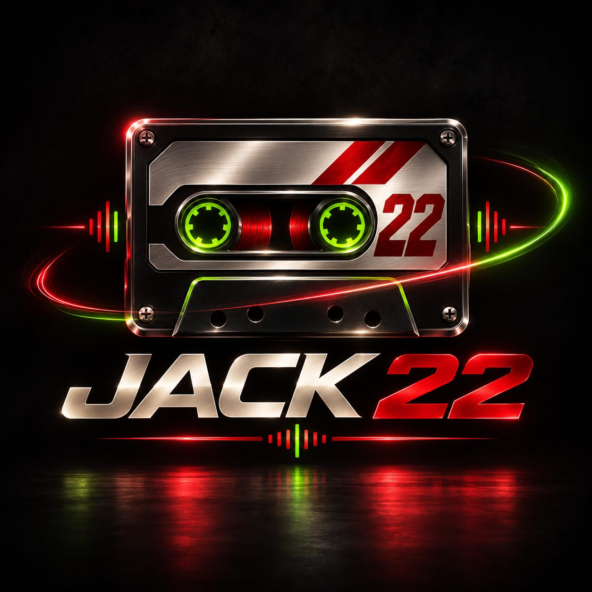

LA FRÉQUENCE DU BLOC
JACK RADIO
CHOISIS.
APPUIE.
ÉCOUTE.
Le rap, le R&B, le shatta, le dancehall et les sons caribéens — dans Jack Radio.
MAINTENANT SUR JACK RADIO
SÉLECTIONNE UNE RADIO8 DESTINATIONSRADIOS EN DIRECT
TOURNE.
TROUVE.
33 STATIONSComme dans un jeu : la station choisie arrive au centre. Tourne la roulette, choisis ton son, puis lance la diffusion.
TOURNE LA ROULETTE
JACK RADIO
RAP · R&B · URBAIN
CHOISIS UNE RADIO
Choisis une radio pour commencer.